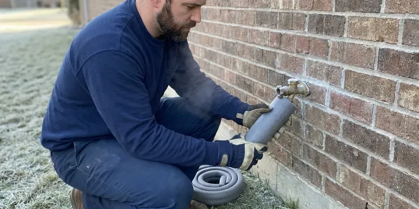

Gas Line Repair in Madison, AL
For reliable gas line repair in Madison, AL, BRV Plumbing is your trusted local expert. We handle all types of gas line issues safely and efficiently.
- Fast, Local Response
- Certified Technicians
- Safety First
- Code Compliant
Expert Gas Line Service Available in Madison, AL.
Don't compromise on safety, get professional gas line repair from BRV Plumbing.
Reliable Gas Line Repair Services in Madison, AL
BRV Plumbing provides comprehensive gas line repair services throughout Alabama, ensuring the safety and efficiency of your home's gas supply. From minor leaks to major pipe damage, our licensed plumbers are equipped to diagnose and fix any gas line issue, adhering strictly to Alabama's plumbing codes.
Our expertise includes:
- Detecting and repairing gas leaks.
- Upgrading and relocating gas lines.
- Installing new gas appliance connections.

Additional Plumbing Maintenance Services in Madison, AL
Our maintenance and specialty plumbing services in Madison, AL catch small problems before they become emergencies.


Customers
Why Choose BRV Plumbing for Gas Line Repair in Madison, AL?
Our team understands the critical nature of gas line work. We provide transparent communication and dependable solutions for every gas line project.
- Safety Focus, Our technicians are trained in gas safety protocols and use specialized equipment to detect and repair leaks without compromise.
- Code Compliance, All gas line repairs are performed according to local Alabama building codes and safety regulations, ensuring your system is up to standard.
- Experienced Plumbers, Our plumbers have extensive experience with various gas piping materials, including black iron pipe, copper, and CSST, providing reliable repairs.
Citywide Coverage
Our commitment extends across the entirety of Madison, providing prompt and professional gas line repair services to all residents. We're familiar with the varied housing stock in the area and adapt our solutions to fit your specific needs.
Experienced Team
Our team of gas line specialists at BRV Plumbing brings years of dedicated experience to every job. They are continuously trained on the latest gas line technologies and safety practices, ensuring precise and reliable repairs.
Safety-First Approach
For every gas line repair in Madison, we ensure adherence to all state and local safety codes. Our commitment to code compliance guarantees that your gas lines are not only repaired but also safe and properly installed for the long term.
Trusted Certified Madison Plumbing Services Professionals
At BRV Plumbing, we take pride in providing certified plumbing services throughout Madison, AL. Backed by leading industry credentials, our experienced plumbers combine technical skill with genuine customer care. Whether it is repair, installation, or maintenance, we follow strict safety and quality standards to deliver lasting results you can trust.
Call Us Now PHCC Plumbing Contractor Recognition
PHCC Plumbing Contractor Recognition Better Business Bureau (BBB) Accreditation
Better Business Bureau (BBB) Accreditation Angi Certified Pro
Angi Certified Pro ISO 9001 Quality Management Certification
ISO 9001 Quality Management CertificationDependable Gas Line Repair Services in Madison, AL
Gas Leak Detection & Repair in Madison
Suspecting a gas leak is a serious concern, and prompt action is crucial. Our technicians use advanced gas leak detection equipment, like electronic sniffers and soap solutions, to pinpoint the exact location of a leak in your home in Madison. Once identified, we perform precise repairs, which can involve patching, replacing sections of pipe, or tightening connections, always ensuring the highest safety standards and proper pressure testing after the repair.

Black Iron Pipe Repair in Madison, AL
Many older homes in Madison, AL utilize black iron pipes for gas lines. While durable, these pipes can corrode over time, especially at joints, leading to leaks. Our team is expert in repairing and replacing sections of black iron pipe, ensuring secure, threaded connections and applying appropriate pipe sealant for a leak-free system. We also check for proper grounding and bonding to prevent electrolysis.
Corrugated Stainless Steel Tubing (CSST) Repair in Madison
CSST is a common flexible gas piping material found in many modern Alabama homes. While convenient for installation, it can be susceptible to damage from lightning strikes or physical impact. Our specialists in Madison are trained to repair or replace damaged CSST, ensuring all connections are properly seated and sealed with approved fittings and that the system is correctly bonded and grounded according to manufacturer specifications and local codes.
Gas Appliance Line Repair in Madison, AL
Your gas furnace, water heater, stove, or dryer relies on a properly functioning gas line. If you notice issues with a specific appliance, the problem might be with its dedicated gas line. We repair or replace faulty appliance connectors, shut-off valves, and flexible supply lines, ensuring all connections are tight and that the correct size and type of line are used for optimal appliance performance and safety in Madison, AL.
Emergency Gas Line Repair in Madison
Gas leaks are emergencies that require immediate attention. BRV Plumbing offers emergency gas line repair services in Madison to address urgent situations quickly and safely. Our rapid response team is equipped to handle critical gas line failures, working efficiently to isolate the leak, perform the necessary repairs, and restore safety to your home, often coordinating with the local gas utility as needed.
Gas Line Relocation & Upgrades in Madison, AL
Renovating your home or adding a new gas appliance in Madison, AL might require relocating or upgrading your existing gas lines. Our plumbers can safely extend or reroute gas lines to accommodate new layouts, ensuring proper sizing for increased demand and compliance with all current building codes. This often involves calculating BTU requirements for new appliances and selecting the appropriate pipe diameter.
Permit & Inspection Guidance in Madison
Many gas line repairs, especially those involving significant alterations or new installations, require permits and inspections from Madison building authorities. We can guide you through this process, ensuring all necessary paperwork is filed and that our work meets the stringent requirements for final inspection. This helps guarantee the long-term safety and legality of your gas system.

Cost-Effective Gas Line Repair Solutions in Madison, AL
We understand that gas line repairs can be an unexpected expense. BRV Plumbing strives to provide cost-effective and transparent solutions for residents in Madison, AL. We offer detailed estimates before any work begins, outlining the scope of repair, materials, and labor. Our goal is to provide durable repairs that prevent future issues, saving you money in the long run while ensuring your safety.
Trusted Gas Line Repair Near Me in Madison, AL
When you search for 'gas line repair near me' in Madison, you want a local company that understands the unique infrastructure and building codes of Alabama. BRV Plumbing is deeply rooted in the community, providing prompt and reliable service to our neighbors. We are always just a call away, ready to dispatch a qualified technician to your location.
Our local presence means we can respond quickly to your gas line repair needs anywhere in Madison, AL. We pride ourselves on being accessible and offering personalized service that larger, non-local companies cannot match. Trust BRV Plumbing to be your local, expert gas line repair partner.
BRV Plumbing at a Glance
- Licensed and insured plumbers serving Madison, AL
- Same-day appointments and 24/7 emergency response
- Clear written estimates, no hidden fees
- 4.8-star rated by 549+ Alabama customers
Madison Map
Madison Information
- Population
- 60,854
- Area codes
- 256/205/938
- Service area
- Madison and communities within 40 miles
- Nearby
- Huntsville, Athens, Decatur, Florence
Given Alabama's climate, which can see both high humidity and occasional freezing temperatures, proper gas line installation and maintenance in Madison, AL are crucial to prevent corrosion and stress fractures that can lead to dangerous leaks.
Expert Services
Trust our professionals for reliable BRV Plumbing solutions in Madison, AL.
Our Specialized Plumbing Services in Madison, AL
At BRV Plumbing, we provide a complete range of plumbing services across Madison, AL. From leak detection to full system installations, our team ensures fast, precise, and affordable service for both residential and commercial properties. Explore our core services below:


How Our Gas Line Repair Process Works in Madison, AL
Our gas line repair process in Madison, AL is designed for efficiency, safety, and transparency. We keep you informed every step of the way, from initial contact to the final safety check.
Request a Quote
Contact BRV Plumbing by calling (256) 391-9413 to schedule an appointment. We'll discuss your gas line issue and arrange for a technician to visit your Madison home.
Thorough Diagnosis
Our certified technician will arrive promptly to inspect your gas lines, using specialized tools to accurately diagnose the problem, whether it's a leak or damage.
Safe & Precise Repair
We will explain the required repairs and provide a clear estimate. Upon your approval, our team will perform the repair using high-quality materials and strict safety standards.
Frequently Asked Questions About Gas Line Repair in Madison
The cost of gas line repair in Madison, AL can vary widely depending on the nature and extent of the damage, the type of piping, and accessibility. Minor repairs like tightening a connection might range from $150 to $400, while replacing a significant section of pipe or dealing with an emergency leak could be $500 to $2,500 or more. We provide a detailed estimate after a thorough inspection.
BRV Plumbing stands behind our work with a comprehensive warranty on all gas line repairs. The specific terms can vary based on the repair type and materials used, but generally cover parts and labor for a period of one year. We're committed to ensuring your long-term satisfaction and safety.
While specific preventative maintenance for gas lines is less common than for other plumbing systems, we do recommend periodic visual inspections, especially for older homes. During other plumbing service calls, we can often perform a quick check of visible gas lines and connections to identify potential issues before they become emergencies.
If you suspect a leak at your gas meter or the main service line leading to your home, do not attempt to fix it yourself. This is the responsibility of the gas utility company. Evacuate your property immediately and call their emergency line. We can assist with repairs to your private gas lines once the utility has addressed their portion.
Common signs of a gas leak include a distinct sulfur-like or rotten egg odor, a hissing sound near a gas line or appliance, visible damage to a gas pipe, or plants dying near an outdoor gas line. If you experience any of these, evacuate immediately and call the gas company and then us.
Yes, many significant gas line repairs and all new gas line installations in Madison typically require a permit from local building authorities. This ensures the work meets safety codes. BRV Plumbing will advise you on permit requirements and can help facilitate the necessary inspections.
Yes, we absolutely can. BRV Plumbing provides repair services for outdoor gas lines connected to grills, fire pits, pool heaters, and other outdoor gas appliances. These lines are often exposed to different environmental factors, requiring specific attention to material and installation standards.
Most standard gas line repairs, such as fixing a small leak or replacing a short section of pipe, can be completed within a few hours. More complex repairs, like extensive pipe replacement or relocation, might take a full day or require multiple visits. We'll give you an accurate timeline after our initial assessment.
What People Are Saying About Our Plumbing Experts?

Patricia H.
We had a slab leak that two other companies could not find. BRV Plumbing located it in under an hour, explained our options, and the price matched the quote to the dollar.
Slab Leak Repair · Decatur, AL
James P.
Our commercial plumbing system had a leak under the sink, and BRV Plumbing handled it professionally. The plumbers arrived quickly and restored everything without disruption to our customers.
Commercial Plumbing · Athens, AL
Laura S.
I scheduled a water heater replacement, and the team made the process smooth and affordable. The new unit works perfectly, and they cleaned up after completing the job.
Water Heater Replacement · Birmingham, ALSofia M.
Two new toilets installed in one visit, no mess left behind, and the tech even adjusted a faucet he noticed was dripping. Fair pricing and really friendly.
Toilet Installation · Birmingham, ALRobert G.
The trenchless sewer replacement saved our front yard. They walked us through the camera inspection footage first so we knew exactly what we were paying for.
Sewer Line Replacement · Huntsville, AL
Mark T.
When our office needed drain cleaning, BRV Plumbing provided quick, reliable service. The plumber arrived on time and made sure every drain flowed perfectly before leaving. Very satisfied.
Drain Cleaning · Decatur, AL